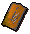

")
Smithing - Extra Features
Introduction | The Dragonfire Shield | Spirit Shields | The Godsword
The Blast Furnace | Training Hints and Tips
Summoning Familiars | Dungeoneering | Quests | Other Smithable Items
The Blast Furnace | Training Hints and Tips
Summoning Familiars | Dungeoneering | Quests | Other Smithable Items
Introduction
When a person has begun to master the smither's trade, having risen from working on lowly bronze to more useful metals, there are certain tools that can be used to improve the efficiency of their work, these include:
| Item | Description |
![[image]](../../img/main/kbase/items/gauntlets/goldsmithing_gauntlets.gif) Gauntlets of Goldsmithing |
Chosen reward from the Family Crest quest, these will grant the user 56.2 experience when smelting gold instead of 22.5. |
![[image]](../../img/main/kbase/items/rings/rubyring.gif) Ring of forging |
With iron, the chance of smelting success is anything from 50% to 80%. Wearing a ring of forging will give you a 100% chance of successfully smelting 140 bars of iron, after which the ring will break. |
The Dragonfire Shield

Note that this may take you some time, so it's advisable not to click away until you have the dragonfire shield in your inventory.
If you don't have the Smithing level to make the shield yourself, you can take your anti-dragonbreath shield and draconic visage to Oziach in Edgeville, who will fuse them into a dragonfire shield in exchange for 1,250,000 coins.
See Melee - Other Items for more details about the dragonfire shield.
Spirit Shields
 When you complete Summer's End you are rewarded with a spirit shield, which can be smithed with some elusive sigils to create even more potent shields. If you have a Prayer level of 90 and a Smithing level of 85, you may well be interested in doing so. Click here to read more about Smithing enhanced spirit shields.
When you complete Summer's End you are rewarded with a spirit shield, which can be smithed with some elusive sigils to create even more potent shields. If you have a Prayer level of 90 and a Smithing level of 85, you may well be interested in doing so. Click here to read more about Smithing enhanced spirit shields.
The Godsword
See Melee - Other Items for more details about the godsword.
The Blast Furnace
The Blast Furnace is located in the eastern area of Keldagrim - the underground dwarven city uncovered during The Giant Dwarf quest. To learn more about the Blast Furnace please click here.
Training Hints and Tips
- Remember that you can use the right-click 'Smelt X' option, this saves a lot of clicking.
- When smelting a large number of ores, use a furnace near a bank, such as Al Kharid. This will save a lot of walking time and will not disrupt your routine too greatly. This method is also useful for Smithing and locations of anvils.
- Making and selling steel bars is fast experience and there is good profit to be made. However, making cannonballs brings an even bigger profit, as they are always easily sold.
- Once you reach the level to smith mithril and higher, you may be able to buy the bars at a price where you will be able to smith it and sell for a profit, without spending time Mining the ores.
- Use the ring of forging (Members Only) to smelt iron ore without failing.
- Combine the Smithing skill with Magic and use the superheat item spell, which smelts ore without a furnace.
- Smithing experience is 'per bar', so items requiring the same amount of bars will yield the same amount of experience.
Summoning Familiars
Using the Summoning skill, you'll find that there are a few familiars that might be useful for training your Smithing. Of particular note are the beasts of burden, who can carry extra bars or ores for you, letting you train for longer periods before having to head to a bank.
Smithing Training in Dungeoneering
It is possible to train all of your skills while dungeoneering, and Smithing is no exception. Ore is readily available in Daemonheim, and can be smelted and smithed into useful armour or weapons. You can also gain Smithing experience by completing smithing skill doors.
- To find out more about skill doors and the basics of dungeoneering, please click here
- To find out about smithing weapons in Daemonheim, click here, and click here to find out about smithing armour
- To find tables with Smithing requirements and XP levels, click here
Quests giving Smithing experience
To view quests that reward you with Smithing experience, please see the Smithing rewards page.
Other Smithable Items
| Item | Levels required |
Quests required |
Items required |
Level required to use | Experience points gained |
![[image]](../../img/main/kbase/armour/mage/elementalshield.gif) Elemental shield |
20 |
Elemental Workshop Part I | Elemental bar | None | 20 |
![[image]](../../img/main/kbase/armour/mage/elementalhelm.gif) Elemental helm |
20 |
Elemental Workshop Part II | Elemental bar | None | 20 |
![[image]](../../img/main/kbase/armour/mage/elementalbody.gif) Elemental body |
33 |
Elemental Workshop Part III | 2 Elemental bars | None | 30 |
![[image]](../../img/main/kbase/armour/mage/elementalmindshield.gif) Mind shield |
30 |
Elemental Workshop Part II | Elemental mind bar | 30 |
30 |
![[image]](../../img/main/kbase/armour/mage/elementalmindhelm.gif) Mind helm |
30 |
Elemental Workshop Part II | Elemental mind bar | 30 |
30 |
![[image]](../../img/main/kbase/armour/mage/elementalmindbody.gif) Mind body |
33 |
Elemental Workshop Part III | 2 Elemental mind bars | 30 |
30 |
![[image]](../../img/main/kbase/armour/mage/elementalbodyshield.gif) Body shield |
33 |
Elemental Workshop Part III | Elemental body bar | 33 |
30 |
![[image]](../../img/main/kbase/armour/mage/elementalbodyhelm.gif) Body helm |
33 |
Elemental Workshop Part III | Elemental body bar | 33 |
30 |
![[image]](../../img/main/kbase/armour/mage/elementalbodybody.gif) Body body |
33 |
Elemental Workshop Part III | 2 Elemental body bars | 33 |
30 |
![[image]](../../img/main/kbase/armour/melee/goldenhelm.gif) Golden helmet |
50 |
Between a Rock... | 3 Gold bars | 30 |
30 |
![[image]](../../img/main/kbase/items/misc/goldenbowl.gif) Golden bowl |
50 |
Legends' Quest | 2 Gold bars | n/a | 30 |
Click here to view the Smithing FAQs

More articles in
Smithing
|
|
|
Further Help
If this article does not help you, you may find the following sections of the RuneScape site helpful:
|
|